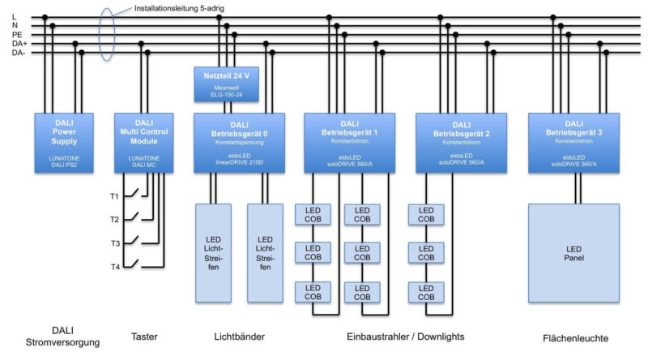
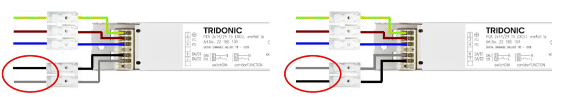
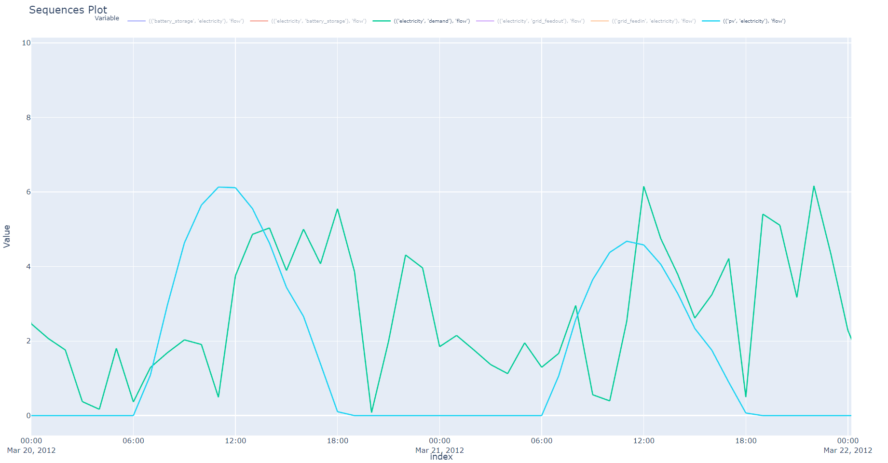

Einführung Gebäudetechnik: IT & Bussysteme
Dr. Julian Huber Management Center Innsbruck
Beispiel Glühbirne 🔗

{kind=link}
Klassische Glühbirne
- Energieeffizienz: 5%
- Lebensdauer: 1.000 Stunden
- Farbtemperatur: fix z.B. 2.700 K
- dimmbare Variante: z.B. durch Unterspannung
- Preis: 1 €


Moderne LED-Glühbirne

Moderne LED-Glühbirne
Moderne LED-Glühbirne
- Energieeffizienz: 80%
- Lebensdauer: 25.000 Stunden
- Farbe/temperatur: variabel
- dimmbare Variante: z.B. durch Pulsweitenmodulation
- Preis: 10 €
5. Nachhaltigkeit und Energieeffizienz
Eingebettetes System
- jedes Gerät hat einen eigenen Mikrocontroller
- Software-Code steuert die Farbe, Helligkeit, ...

- Trennung von Ein- und Ausgängen
- diese werden erst durch Software verknüpft

🯠Lernziele
- Konzeption von Schaltregeln als Endliche Automaten oder Wahrheitstabellen
- Anschluss von Sensoren und Aktoren an Mikrocontroller und Speicherprogrammierbaren Steuerungen
- Umsetzung in Software-Programmen mittels Kontrollstrukturen
3-Kanal-LED-Controller mit Pulsweitenmodulation

🯠Lernziele
- Einsatz von Zahlensysteme und Bit-Operationen
- Unterschiede zwischen Analogen und Digitalen Signalen
- Auswahl von Ein- und Ausgabegeräten
Verbindung von Sensoren und Aktoren

4. Gebäudeautomation und Steuerung
🯠Lernziele
- Informationsübertragung mittels Bussystemen und verschiedenen Randbedingungen z.B. Echtzeitfähigkeit, Teilnehmerzahl, Störsicherheit
- Grundkonzepte der Steuerungs- und Regelungstechnik z.B. PID-Regler für Konstantlichtregelung
Vernetzung in Gebäuden

6. Instandhaltung und Betrieb
🯠Lernziele
- Netzwerkkonfiguration für TCP/IP-Netzwerke
- Sicherheitsaspekte z.B. Firewall, VPN, Verschlüsselung
- Datenspeicherung und Datensicherung im Betrieb und bei Störungen
Bussysteme als Zentrales Nervensystem

2. Klimatisierung und Raumkomfort
Bussysteme für verschiedene Gewerke

🯠DALI - Intelligente Lichtsteuerung

- Verkabelung und Addressierung von bis zu 64 Leuchten und Zusammenfassen in Gruppen
- Konfiguration von Szenen für verschiedene Anforderungen
7. Anpassung an Nutzungsänderungen

🯠KNX & BACnet - Übergreifende Gebäudeautomation

- Einsatzgebiete und Topologien verschiedener Bus-Systeme
- Planung von Raumautomations-Funktionen mittels Schemata
3. Sicherheits- und Brandschutz
Anlagenautomation

Klassische Automatisierungstechnik
- Verdrahtung von Aufbau von SPS-Sytemen
- Programmierung mittels Funktionsplänen oder Strukturiertem Text
Ethernet/IP

- Grundtechnologien des Internets, z.B. TCP/IP, JavaScript, HTML
- Datenübertragung mittels HTTP, MQTT
8. Komfort und Nutzerfreundlichkeit
Energiemanagement & Smart Metering
![h:400]
1. Sicherstellung von Versorgung und Entsorgung
Energiesysteme
- Versorgung, Erzeugung, Speicherung, Verteilung, Verbrauch
- Skalen: Gebäude, Stadt, Region, Land, Welt
- Sektoren: Strom, Wärme, Mobilität
- Technologien: Erneuerbare, Speicher, Wärme, Elektrolyse, ...
- Zielkonflikte: Klimaneutralität, Versorgungssicherheit, Wirtschaftlichkeit
Energiemanagement
- Planung: Welche Technologien, Standorte, Größen
- Betrieb: Welche Steuerung, Regelung, Optimierung
- Optimierung: Potenziale aufdecken, Kosten minimieren
Beispiel: Optimierung eines EFH mit PV und Speicher

Lasten und Ertäge

Speicherbewirtschaftung

🯠Dafür benötigt
- Zentrales System zur Steuerung und Optimierung
- Smart Metering für genaue Verbrauchsdaten und Abrechnung
- Schnittstelle oder Bus-Systeme für Speicher-Management und
- externe Datenquellen für Wetterdaten, Strompreise, ...
Semester 1: Grundlagen Informationstechnologie & Datensicherheit
| 1. Rechnersysteme |
| 2. Informationsdarstellung |
| 3. Compiler und Algorithmen |
| 4. Programmieren |
| 5. Datenspeicherung |
| 6. Kommunikation |
| 7. IT-Sicherheit und Datenschutz |
Semester 2: Bussysteme
| 1. Gebäudeautomation und Planung |
| 2. Messkette und Computer-Systeme |
| 3. Steuerung- und Regelungstechnik |
| 4. Speicherprogrammierbare Steuerung |
| 5. Bussysteme |
| 6. Smart Metering |
Semester 2: Labor Bussysteme